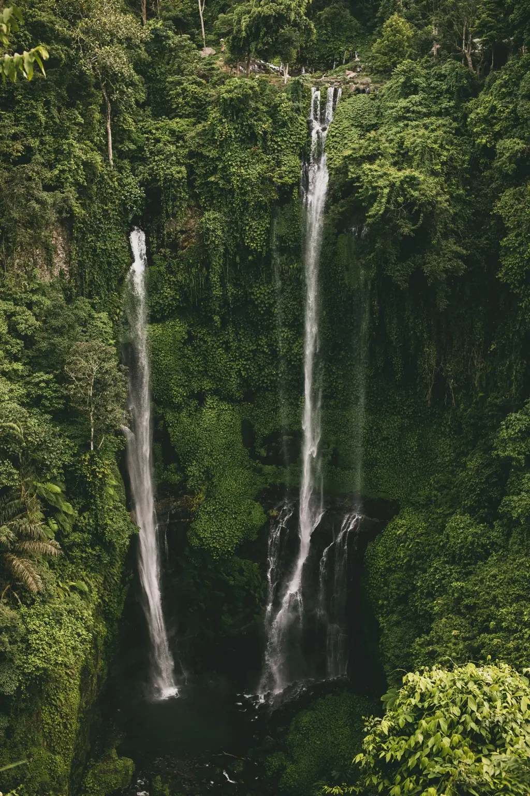

What You'll Do

Twin Lakes Viewpoint (Buyan & Tamblingan)
Two crater lakes side by side, seen from a ridge-top viewpoint wrapped in cool mountain air and often a drift of mist. It's one of the most photographed panoramas in the north - a calm, scenic way to open the day.

Banyumala Twin Waterfall
Two streams falling side by side into a wide, clear pool you can swim in. A short trek down through the jungle keeps the crowds away - you'll often have the place almost to yourself. Bring a change of clothes.

Munduk Waterfalls
A quiet mountain village surrounded by clove and coffee plantations, with a trail of slender jungle waterfalls tucked into the valleys. We walk to one of the prettiest and stop for a proper Balinese coffee with a view.
Gitgit Waterfall
One of North Bali's most accessible waterfalls - a tall single drop reached by an easy paved path through coffee and spice gardens. A refreshing final stop before the drive back over the mountains to Ubud.